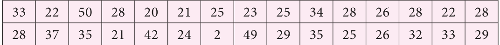
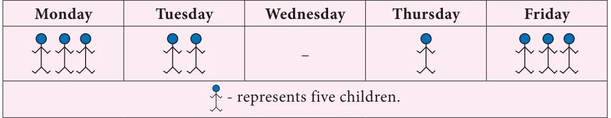

Chapter
5
STATISTICS
Learning Objectives
●● To recall collection and organisation of discrete data. ●● To recognise and distinguish among the different types of averages such as the Arithmetic Mean, Median and Mode of discrete data. ●● To learn to compute different types of averages.
Recap
We have studied about data, classification and pictorial representation of data in class VI. Let us recall them now.
Observe the following tables and answer the questions given below.
The marks obtained by 30 students in a mathematics test (out of 50 marks) is given below.

What is the maximum mark scored? How many students scored above 40 marks?
- (iii)Find the minimum mark scored?
- (iv)How many students scored between 21 and 23 (both inclusive)?
- (v)Find the difference between maximum and minimum scores?
Table 2
Data shows the children who are absent in class VII during a particular week.

- (ii)Mention the day with ten absentees.
- (iii)Which day of the week has no absentees ?
- (iv)Find the day on which maximum number of children were absent?